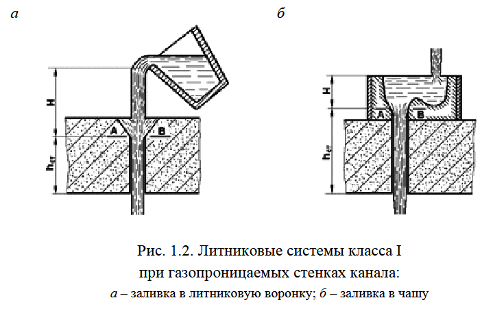

Калькулятор литниковой системы
Озанн–Диттерт · Чуркин (УГТУ-УПИ, 2012) · воронка → стояк → коллектор → питатель
Сплав, масса и число питателей — остальное подставим сами.
Выберите тип ЛС и условия заливки — предложим S₁ из таблицы учебника.

Размеры с рисунка — в миллиметрах.
Площади сечений и размеры элементов литниковой системы.